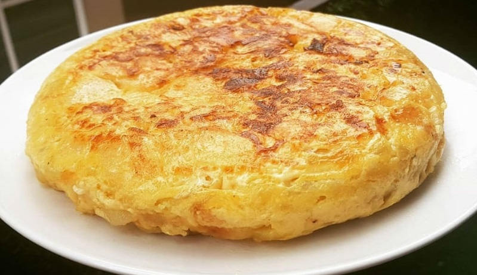

Tortilla de papas

Ingredientes:
- 4 huevos.
- 3 papas de tamaño medio.
- 1/2 cebolla.
- Sal.
- Pimienta.
Preparación
-
Lo primero que vamos a hacer es cortar las papas en rodajas finas, de
tamaño medio y los más uniformes que podamos para que la cocción sea
pareja, esto además va a ayudar a que queden adheridas al huevo
fácilmente.
Nota: Hay personas que utilizan un rallador ancho para cortar las
papas, depende del tamaño del corte, puede ser bastante útil.
-
A continuación vamos a realizar la cocción de las papas. Para esto
vamos a poner bastante aceite en una sartén y lo vamos a llevar a
fuego fuerte. Antes de que el aceite hierva, cuando todavía esta a
temperatura media, añadimos las papas. Y dejamos cocinar unos 5
minutos aproximadamente. Mientras se cocinan las papas vamos a cortar
la cebolla en julianas, y cuando estén listas las agregamos a la
cocción de las papas. Vamos a revolver suavemente para integrar los
ingredientes, y añadimos sal a gusto.
-
Con los ingredientes correctamente mezclados, vamos a bajar el fuego a
mínimo. Tapamos la sartén dejando un pequeño espacio para que salga el
vapor y dejamos cocinar de esta forma durante unos 15 minutos,
revolviendo cada tanto para que no se pegue. Cumplido el tiempo, vamos
a verificar que las papas estén cocidas, no deben estar crocantes. Las
retiramos de la sartén con una espumadera para dejar que se escurra el
excedente de aceite.
-
Ahora en un bol vamos a mezclar los 4 huevos con u poco de sal. Vamos
a volcar las papas y la cebolla en el bol con los huevos batidos y
vamos a revolver nuevamente para que el huevo cubra absolutamente la
preparación.
-
Colocamos un chorrito de aceite en una sartén nueva, subimos a fuego
fuerte y cuando este bien caliente volcamos la preparación del bol.
Renové la sartén en círculos durante unos 30 segundos para que no se
pegue y la tortilla quede a la perfección. Ahora bajamos el fuego, y
dejamos cocinar, mientras que con una espátula vamos retocando los
bordes para despegarla de la sartén. Suavemente para no romperla. Esto
debemos hacerlo durante unos 5 minutos, el tiempo igual dependerá del
tamaño de la tortilla y de tu gusto puede ser más cocida, o babé, para
esto la cocinamos menos tiempo.
-
Cumplidos los 5 minutos debemos darla vuelta. Atentos a este paso,
solo deben colocar un plato del lado superior cubriendo la superficie
de la sartén perfectamente, y luego dan vuelta todo junto en un solo
movimiento. Sin miedo, es más fácil de lo que parece. Dejamos cocinar
unos 4 minutos más del otro lado y listo.